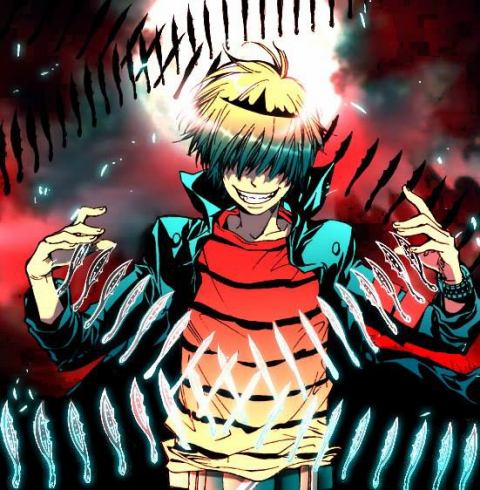
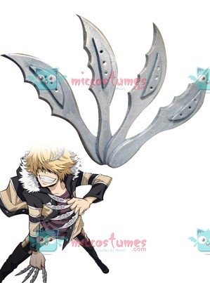

| Belphegor (貝爾飛格爾) |
| ベルフェゴール, Berufegōru |
|  |
| Biographical information |
| Age |
16 |
| Birthday |
December 22 |
| Physical description |
| Gender |
Male |
| Height |
170 cm |
| Weight |
58 kg |
| Blood type |
AB |
| Underground information |
| Flame |
Storm Flame |
| Equipment |

Knives |
| Box Animal |

Storm Mink |
Bel has a crescent-shaped birthmark on the right side of his stomach which mirrors Rasiel's mark. His eyes are never shown, but in Volume 24, Lussuria says in his interview that his eyes are both cool and loyal. He has short blonde hair with long bangs and is usually seen wearing the Varia uniform, in addition to a purple striped shirt and a silver tiara that mirrors Rasiel's (Bel wears his tiara on the left side of his head whereas Rasiel's tiara is worn on the right). At present, his hair is styled in a bowl cut; his hairstyle changes in the future.As a child, Bel wore a white shirt, which distinguished him from Rasiel's black.
.